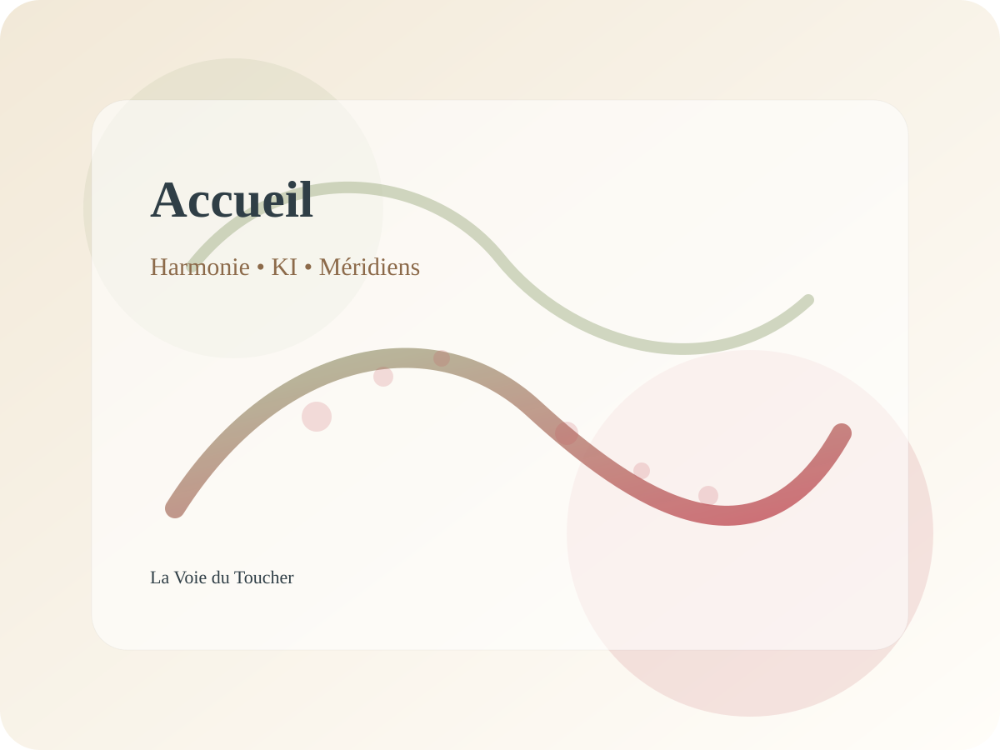

Shiatsu
Pressions avec les pouces, les paumes et parfois les coudes sur les méridiens pour harmoniser et renforcer la force vitale.
En savoir plus →Shiatsu, Gua Sha, acupuncture, Tui Na – An Mo et ventouses Ba Guang dans une approche globale du corps, de l’âme et de l’esprit.
Les Saint Sages d’autrefois ont voulu suivre l’ordre de la loi intérieure et de la destinée. C'est pour cette raison qu’ils ont déterminé :
Ces trois puissances fondamentales sont combinées :
(Tao Te King)
Le toucher est un moyen de maintenir l’harmonie entre la terre, l’homme et le ciel, au travers des méridiens, et au travers du KI.
Le KI, cette force vitale, est la libre manifestation des transformations. Il est l’aspect invisible et indispensable de tout le vivant, et les méridiens sont la voie du KI.

Pressions avec les pouces, les paumes et parfois les coudes sur les méridiens pour harmoniser et renforcer la force vitale.
En savoir plus →Technique de friction traditionnelle au laiton pour mobiliser l’énergie, favoriser la circulation et accompagner l’élimination des toxines.
En savoir plus →Stimulation de points précis sur les méridiens afin de rétablir une circulation harmonieuse du Qi dans tout le corps.
En savoir plus →Massage chinois dynamique reposant sur les méridiens et les points d’acupuncture, avec différentes techniques manuelles.
En savoir plus →Application de ventouses en verre pour décontracter, drainer, détoxifier et soutenir la circulation locale.
En savoir plus →Découvrez le parcours de la thérapeute, les tarifs, ainsi que les coordonnées du cabinet pour préparer votre venue.
Voir les informations →